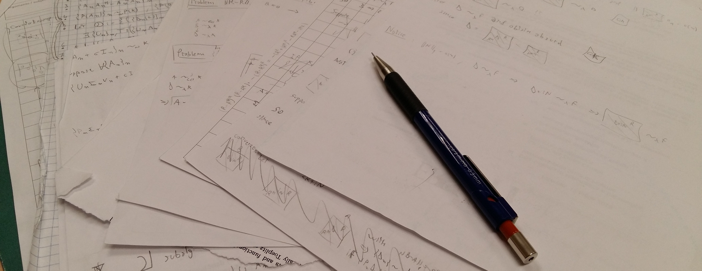
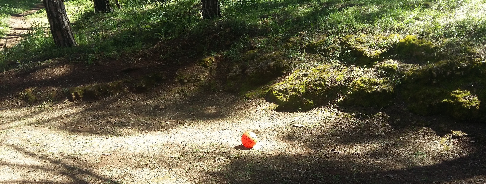

Under Construction

-
Triennale
-
Magistrale
-
Dottorato
Corsi
-
Topics in Low Rank Factorization and Data Analysis
-
Gruppi e Algebre di Lie
-
Metodi Numerici per la Grafica
-
Metodi di Krylov e Applicazioni
-
Teoria dei Giochi
-
Algoritmi e Strutture Dati
-
Calcolo Scientifico
-
Linguaggi di Programmazione
-
Laboratorio Computazionale
-
Schemi
-
Elementi di Algebra Computazionale
-
Ottimizzazione
-
Gruppi e Rappresentazioni
-
Elementi di Geometria Algebrica
-
Teoria dei Codici e Crittografia
-
Reti Neurali

-

Didattica
Topics in Low Rank Factorization and Data Analysis 2024:
- PCA
- Note scritte a mano per PCA: PDF [ENG]
- Video per la Lezione 3: Zip [ENG]
- Video per la Lezione 4: Mp4 [ENG]
- Dati Sessione PCA: Zip [ENG]
- Codici Sessione PCA: Zip [ENG]
- Clustering
- Note scritte a mano per Clustering: PDF [ENG]
- Dati Sessione Clustering: Zip
- Codici Sessione Clustering: Zip [ENG]
- NMF
- Note scritte a mano per NMF: PDF [ENG]
- Slides e video per NMF: ZIP [ENG]
- Dati Sessione NMF: Zip
- Codici Sessione NMF: Zip [ENG]
Gruppi e Algebre di Lie 2018:
Metodi Numerici per la Grafica 2018:
Metodi di Krylov e Applicazioni 2018:
Algoritmi e Strutture Dati :
Linguaggi di Programmazione:
Laboratorio Computazionale :
-
Problema di Estrazione di Bi-Clique Massimali: PDF [ENG]
Elementi di Algebra Computazionale 2015:
- Appunti del corso, con autore principale Carlo Sircana: PDF [ITA]
- Jacobi Symbol e il suo calcolo: PDF [ENG]
- Programmi usati per il calcolo del Jacobi Symbol: Zip
Ottimizzazione :
-
Algoritmi per Metodi di Piani di Taglio: PDF [ITA]
-
Programmi per l'implementazione degli Algoritmi: Zip [ITA]
Gruppi e Rappresentazioni 2016:
Elementi di GEometria Algebrica 2016:
Teoria dei Codici e Crittografia 2016:
Reti Neurali :
- Interfaccia semplice in C++ per Reti Neurali:
Zip [ENG]
-
Interessi
-
Articoli
-
Conferenze
-
Preprint
-
Ricerca

I miei interessi principali sono l'analisi spettrale di matrici e le decomposizioni di rango basso.
Ho lavorato in vari ambiti, quali sequenze di matrici derivate dalla discretizzazione di PDE lineari,
matrici strutturate per comunicazioni quantiche,
matrici polinomiali aleatorie con stazza e/o grado crescente,
perturbazioni di matrici Hermitiane,
e su metodi iterativi in signal processing.
Inoltre, ho lavorato su problemi di clustering su grafi diretti,
e su tecniche di machine learning indirizzate ad identificare strutture di simplesso
attraverso le lenti dei metodi di fattorizzazione di rango basso,
con un focus sulla fattorizzazione nonnegativa di matrici.
Più recentemente, mi sono interessato a coni simmetrici derivati da algebre di Jordan
e da problemi quadratici indefiniti con restrizioni coniche.
Sostenuto dal consolidator ERC grant no 101085607 dell'Unione Europea (Set 2023 - Giu 2026)
Progetto: Beyond Low-Rank Factorizations (eLinoR)
Preprint e Note:
-
Barbarino G.,
Garoni C.,
Manni C.,
Pelosi F.,
Speleers H.
Isogeometric immersed methods based on box splines: a spectral analysis
In Preparazione
-
Barbarino G., Gillis N.,
Subhayan S.
Probability of Sampling SSC
In Preparazione
-
Barbarino G., Gillis N.,
Subhayan S.
Identifiability of Nonnegative Tucker Decompositions -- Part II: Algorithms and Applications
In Preparazione
-
Barbarino G., Gillis N.,
Subhayan S.
Identifiability of Nonnegative Tucker Decompositions -- Part I: Theory
Arxiv (Mag 2025)
-
Barbarino G., Gillis N.,
Sossa D.
Computing cone-constrained singular values of matrices
Arxiv (Apr 2025)
-
Barbarino G., Orlitzky M.
The uniqueness of Lyapunov rank among symmetric cones
Arxiv (Mar 2025)
-
Barbarino G.,
Fanizza M.,
Giovannetti V.,
Mele F. A.
Non-asymptotic quantum communication on lossy transmission lines with memory
Arxiv (Mar 2025)
-
Barbarino G.,
Weiss S.
Relations Between Analytic Spectral and Singular Value Decompositions
submitted to EUSIPCO25 (Mar 2025)
-
Barbarino G.,
Ekström S.-E.,
Garoni C.,
Meadon D.,
Serra-Capizzano S.,
Vassalos P.
From asymptotic distribution and vague convergence to uniform convergence, with numerical applications
Journal of Numerical Mathematics - to appear (Feb 2025).
-
Barbarino G.,
Fanizza M.,
Giovannetti V.,
Mele F. A.
Achievable rates in non-asymptotic bosonic quantum communication
Arxiv (Feb 2025)
-
Barbarino G., Gillis N.
On the Robustness of the Successive Projection Algorithm
Arxiv (Dic 2024)
-
Barbarino G.
Ergodic Estimations for Toeplitz Sequences Generated by a Symbol
Arxiv (Dic 2024).
-
Barbarino G.,
Ekström S.-E.,
Serra-Capizzano S.,
Vassalos P.
Theoretical results for eigenvalues, singular values, and eigenvectors of (flipped) Toeplitz matrices and related computational proposals
Arxiv (Lug 2022).
-
Barbarino G.
Notes on asymptotic eigenvalues distribution on complex circles
Arxiv (2018)
-
Barbarino G.
Conjectures on Perturbations of Hermitian Sequences
Arxiv (2018)
-
Barbarino G.
Diagonal Matrix Sequences and their Spectral Symbols
Arxiv (2017)
-
Barbarino G.
Permutation NMF
Arxiv (2016)
Articoli:
-
Barbarino G., Cavassi R.,
Cicone A.
Extension and convergence analysis of Iterative Filtering to spherical data
Linear Algebra and its Applications 721, pp. 542-576 (Set 2025) - PDF
-
Barbarino G.,
On the Periodicity of Singular Vectors and the Holomorphic Block-Circulant SVD on the Unit Circumference
Linear Algebra and its Applications 721, pp. 465-483 (Set 2025) - PDF
-
Barbarino G.,
Ekström S.-E.,
Garoni C.,
Meadon D.,
Serra-Capizzano S.,
Vassalos P.
Spectral properties of flipped Toeplitz matrices and computational applications
Applied Mathematics and Computation 499 (Ago 2025).
-
Barbarino G.,
Claesson M.,
Ekström S.-E.,
Garoni C.,
Meadon D.,
Speleers H.
Matrix-less spectral approximation for large structured matrices
Bit Numer Math 65, 2 (Mar 2025)
-
Barbarino G., Garoni C.
GLT sequences and normal matrices
The Electronic Journal of Linear Algebra 41, pp. 1-20 (Gen 2025)
-
Abdolali M.,
Barbarino G., Gillis N.
Dual Simplex Volume Maximization for Simplex-Structured Matrix Factorization
SIAM Journal on Imaging Sciences 17(4), pp. 2362-2391 (Dic 2024) - PDF
-
Barbarino G.,
McWhirter J.G.,
Pestana J.,
Proudler I.,
Weiss S.
On Properties and Structure of the Analytic Singular Value Decomposition
IEEE Transactions on Signal Processing 72, pp. 2260-2275 (Gen 2024) - PDF
-
Barbarino G., Cicone A.
Stabilization and Variations to the Adaptive Local Iterative Filtering Algorithm: the Fast Resampled Iterative Filtering Method
Numerische Mathematik 156, pp. 395-433 (Gen 2024) -
Online -
PDF
-
Barbarino G., Noferini V.
On the Rellich eigendecomposition of para-Hermitian matrices and the sign characteristics of ∗-palindromic matrix polynomials
Linear Algebra and its Applications 672, pp. 1-27 (Set 2023) - PDF
-
Barbarino G.,
Garoni C.
An extension of the theory of GLT sequences: sampling on asymptotically uniform grids
Linear and Multilinear Algebra 71 (12), pp. 2008-2025 (Ago 2023) - PDF
-
Barbarino G., Noferini V.,
Van Dooren P.
Role extraction for digraphs via neighborhood pattern similarity
Physical Review E 106 (5), 054301 (Nov 2022) - PDF
-
Barbarino G., Cicone A.
Conjectures on spectral properties of ALIF algorithm
Linear Algebra and Its Applications 647, pp. 127–152 (Ago 2022) - PDF
-
Barbarino G., Noferini V.
The limit empirical spectral distribution of complex matrix polynomials
Random Matrices: Theory and Applications 11 (3) (Lug 2022) - PDF
-
Barbarino G., Garoni C.,
Mazza M.,
Serra-Capizzano S.
Rectangular GLT sequences
Electronic Transactions on Numerical Analysis 55, pp. 585-617 (Giu 2022) - PDF
-
Barbarino G.,
Bianchi D.,
Garoni C.
Constructive approach to the monotone rearrangement of functions
Expositiones Mathematicae 40 (1), pp. 155-175 (Mar 2022) - PDF
-
Barbarino G., Noferini V.
The limit empirical spectral distribution of Gaussian monic complex matrix polynomials
Journal of Theoretical Probability 36, pp 99-133 (Feb 2022) - PDF
-
Barbarino G.
A systematic approach to reduced GLT
Bit Numer Math 62 (3), pp. 681-743 (Set 2021) - PDF
-
Barbarino G., Serra-Capizzano S.
Non‐Hermitian perturbations of Hermitian matrix‐sequences and applications to the spectral analysis of the numerical approximation of partial differential equations
Numer Linear Algebra Appl. 2020;e2286 (Mar 2020) - PDF
-
Barbarino G., Garoni C., Serra-Capizzano S.
Block Generalized Locally Toeplitz Sequences: Theory and Applications in the Multidimensional Case
Electronic transactions on numerical analysis ETNA 53:1, pp. 113-216 (Gen 2020) - PDF
-
Barbarino G., Garoni C., Serra-Capizzano S.
Block Generalized Locally Toeplitz Sequences: Theory and Applications in the Unidimensional Case
Electronic transactions on numerical analysis ETNA 53:1, pp. 28-112 (Gen 2020) - PDF
-
Barbarino G.
Spectral Measures
Structured Matrices in Numerical Linear Algebra, Springer INdAM Series 30, pp. 1-24 (Apr 2019) - PDF
-
Barbarino G., Garoni C.
From convergence in measure to convergence of matrix-sequences through concave functions and
singular values
Electr. J. Linear Algebra 32, pp. 500-513 (Feb 2017) - PDF
-
Barbarino G.
Equivalence between GLT sequences and measurable functions
Linear Algebra Appl. 529, pp. 397-412 (Set 2017) - PDF
Conferenze, Scuole Estive e Seminari:
-
Info
Carriera:
2023 - ora : Post-Doc alla
UMONS in Analisi Numerica
2020 - 2023 : Post-Doc alla Aalto University in Analisi Numerica
2016 - 2020 : Perfezionando all'SNS in Matematica
2014 - 2016 : Laurea Magistrale all'Università di Pisa e SNS in Matematica Applicata
2011 - 2014 : Laurea Triennale all'Università di Pisa e SNS in Matematica
Fondi e Premi:
2024 - ora : Abilitazione Scientifica Nazionale di seconda fascia al ruolo di Professore Associato
2023 - ora : Supportato da ERC consolidator grant no. 101085607
Progetto: Beyond Low-Rank Factorizations (eLinoR)
2023 - 2023 : ILAS LAA Early Career Award, Early Career Speakers per la 25th ILAS Conference
2022 - 2023 : Grant Alfred Kordelinin säätiö, Finland, no. 210122
PI del progetto
Decorrelation Methods for Multi-Input Nonstationary Signals
2016 - 2020 : Scholarship presso la SNS - PhD
2011 - 2016 : Scholarship presso la SNS - Triennale e Magistrale
<<<<<<< HEAD
=======
>>>>>>> main
Membro del GNCS Indam ( Gruppo Nazionale Calcolo Scientifico )
Membro del SIAM Activity Group on Linear Algebra (SIAG/LA)
Membro di ILAS International Linear Algebra Society
Membro dell'Unione Matematica Italiana (UMI)
Reviewer presso ZbMATH ( Zentralblatt MATH ),
MR ( Mathematical Reviews - MathSciNet ),
e per riviste scientifiche
Curriculum Vitae Parziale
Profilo Researchgate
ORCID
Google Scholar
SCOPUS
-
Altro

Partecipante e Organizzatore delle Olimpiadi Italiane della Matematica.
Alcuni utili Link:
-
Oliforum: forum ufficiale delle Olimpiadi Italiane della Matematica [ITA]
-
Vid: video-lezioni ufficiali degli stages [ITA]
-
IMO: sito ufficiale delle Olimpiadi Internazionali della Matematica [ENG]
-
AoPS: Forum, Tutorial, Lezioni e molto più su Matematica e Matematica Olimpionica [ENG]
-
MateMate: Blog che tratta di problemi non elementari [ITA]
-
AndFog: Ulteriore collezione di problemi e interessanti fatti matematici [ITA]
Programma di Scacchi da Terminale: Eseguibile
Progetto LA (in costruzione): Sito Web
Scacchi a Sinistra da Browser (in costruzione): Sito Web
Rischiatutto Edizione del Dipartimento, presentato da Bargagnati
Per altre informazioni, consultare l'origine
{kind=link}